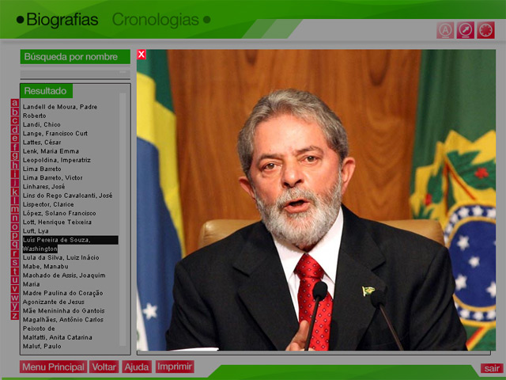
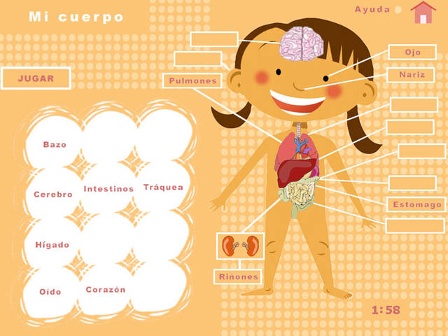
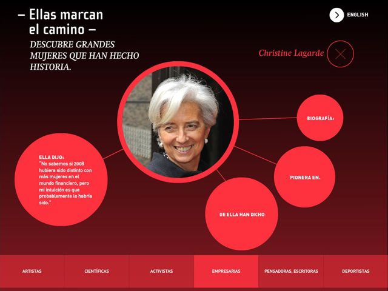
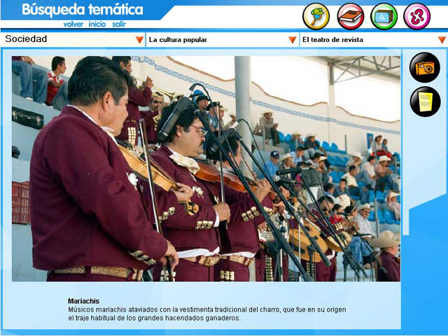
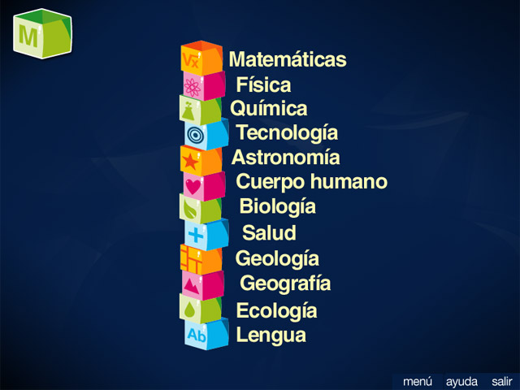
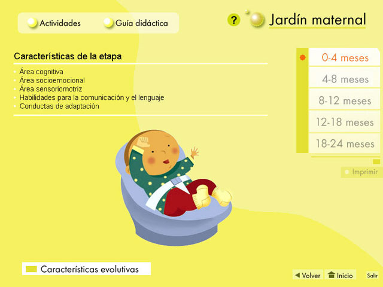

Participación en más de 300 producciones
Centramos nuestros servicios profesionales en la creación de contenidos multimedia e interactivos para cualquier plataforma o tecnología moderna conocida (ordenadores, portátiles, tablets, móviles y otros nuevos dispositivos "la nueva gama de frigórificos, lavadoras, televisores o cafeteras a pedales conectados a Internet". Así, la compatibilidad de estos contenidos se hace posible gracias a la utilización de HTML5, CSS3 y sobre todo JavaScript a través de la biblioteca jQuery, que facilita enormemente la creación de código al hacer parte del trabajo.